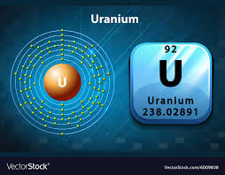
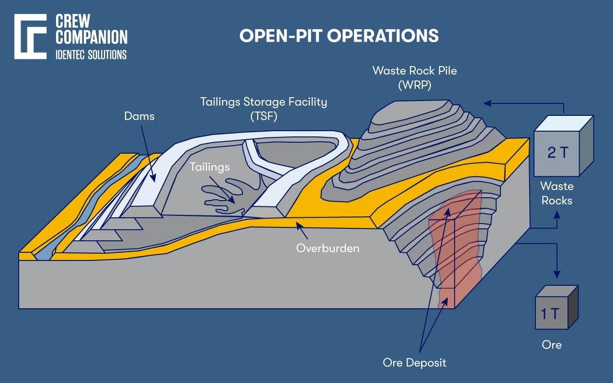
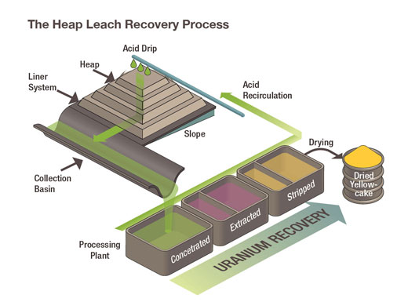
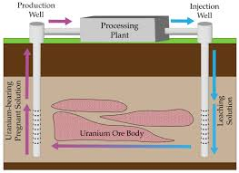
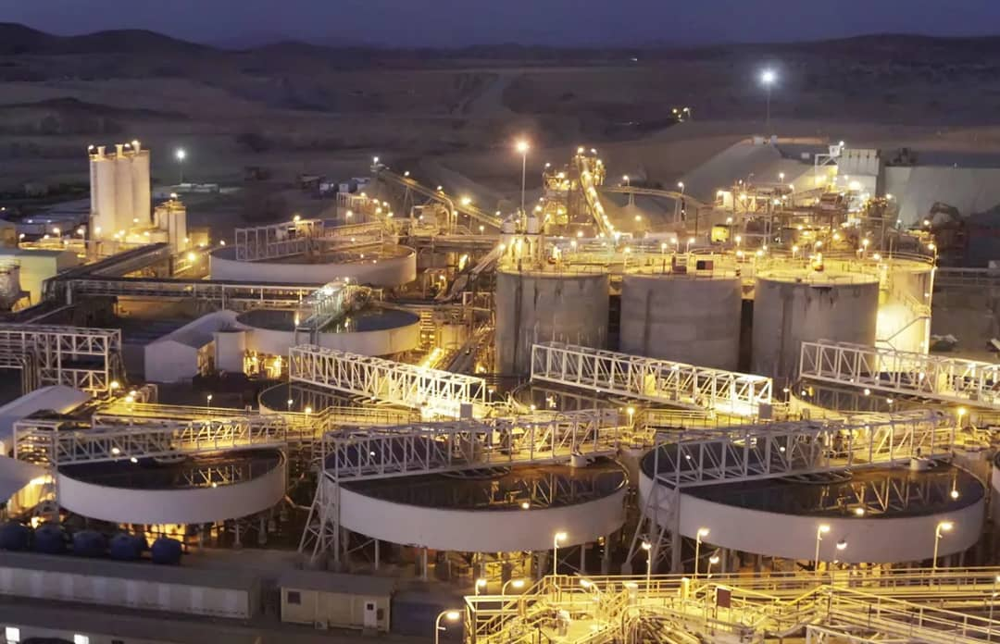
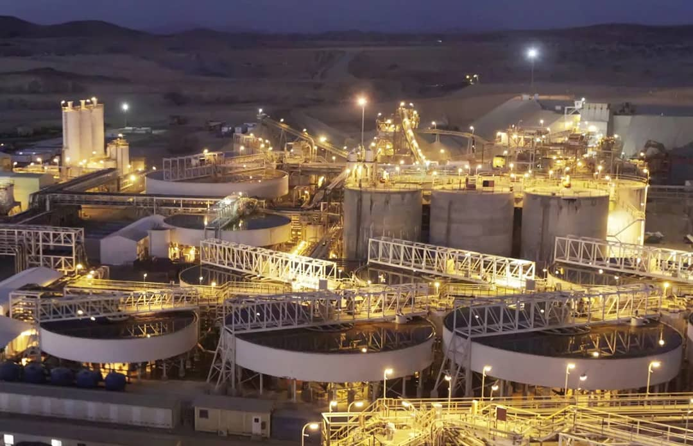

Innovating Uranium Mining Through Technology & Sustainability
Welcome
Purpose: To educate the public, stakeholders, and youth about uranium mining and geology in Namibia.
Mission: Promote responsible, sustainable uranium mining through research-based solutions.
Infographic: Uranium timeline (1976 – present)
About Uranium & Geology
What is Uranium?
Used primarily as fuel in nuclear power plants.
Highly dense and heavy, making it useful in military and scientific applications.
Found in various minerals, such as uraninite, carnotite, and coffinite.
Geological Reasons Namibia is Rich in Uranium
Arid Climate + Exposed Rocks: Namibia's dry desert environment (like the Namib Desert) slows erosion, keeping uranium-rich rocks exposed near the surface.
Proterozoic Rocks & Granites: The region has rocks from the Proterozoic Eon (1,000–2,500 million years old), including granitic intrusions rich in uranium (e.g., Rossing and Husab Mines).
Calcrete-Hosted Deposits: In desert basins, uranium leaches from older rocks and accumulates in calcrete layers near the surface (e.g., Langer Heinrich and Trekkopje Mines).
Tectonic Setting: Namibia lies in the Damara Orogenic Belt, formed by ancient continental collisions, creating structural traps where uranium-rich fluids accumulated.
Major Uranium Provinces in Namibia
See the map below for major uranium mine locations in Namibia.
Atomic Diagram of Uranium

Mining Methods in Namibia
1. Open-Pit Mining Used by: Husab Mine, Rossing Mine, Langer Heinrich Mine (initially), Trekkopje Mine
Exploration & Planning: Geologists identify uranium ore using drilling and sampling. Mine engineers design the pit layout and depth.
Overburden Removal: Soil and non-uranium rock is removed using bulldozers and excavators.
Drilling and Blasting: Holes are drilled and filled with explosives to break rock.
Loading and Hauling: Shovels load ore into haul trucks for processing.
Waste Rock Management: Waste is dumped in designated sites.
Progressive Deepening: Pits grow deeper over time as mining continues.

2. Heap Leaching Used by: Trekkopje Mine, future Langer Heinrich operations
Ore is crushed and stacked on lined pads.
Leach solution is applied to extract uranium.
The uranium-rich solution is collected and processed.

3. Tank Leaching / Conventional Leaching Used by: Langer Heinrich Mine (post-restart)
Ore is ground into fine powder and mixed with water and chemicals.
Uranium is dissolved in tanks under controlled conditions.
Solution is separated, uranium is recovered and dried as yellowcake (U₃O₈).

Mine-Specific Information
Husab Mine: Open-pit mining using conventional truck and shovel method. Processes include acid leaching with pyrolusite oxidant.
Case Study: Water Allocation for Heap-Leach Pilot at Husab Mine
Context:
Husab Mine processes ~116 million tonnes of ore per year to produce ~3,300 t U₃O₈.
Swakop Uranium is piloting a N$290 million heap-leach project for low-grade ore, with results expected by 2025.
Erongo Region is in drought; a second desalination plant (20 Mm³/year) is expected 2025–27.
Water constraints limit mine expansion unless infrastructure improves.
Real-Life Problem:
With only ~30 Mm³/year available water, Husab must decide how to allocate between:
Base sulphuric acid plant (needs ~26 Mm³) for 3,300 t/year output
New heap-leach pilot (needs ~4 Mm³) for +300 t/year potential
Key Risk: Allocating to the pilot may reduce base output by 10% (–330 t/year), costing US$46.5M/year, while the pilot only brings in US$42.3M/year at current yields.
.png)

 
